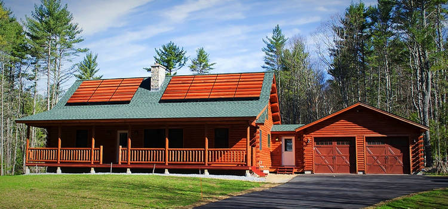
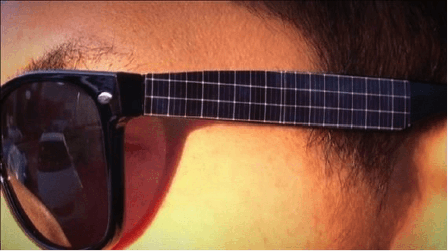
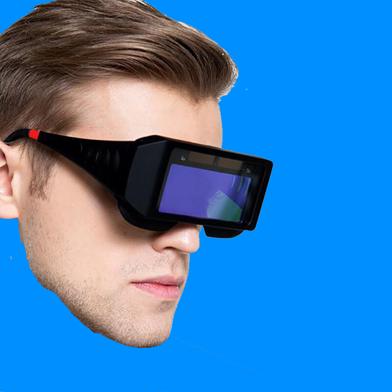
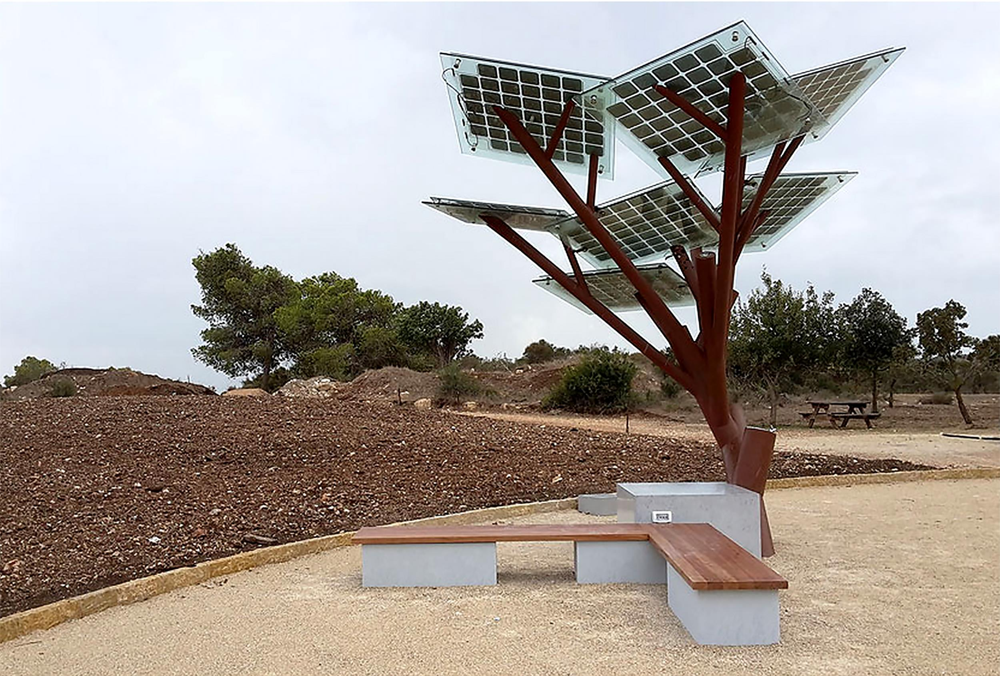

What about Solar Panels?
Facts!
solar energy technology came on its own in 1954, when Bell Laboratories created the first commercially solar cell. Since that time, solar power has jumped into prominence as the fastest-growing sector of the energy economy, creating jobs at six times the rate of the general job market. There are lots of advantages to using solar energy. The U.S. alone generates enough electricity from solar energy to power more than 11.3 million homes. And that number continues to rise as we pursue increased energy independence reducing effects of fossil fuels on the environment. Solar Energy being cheaper than fossil fuels.Most solar systems come with a warranty. The warranty we offer at SunPower by Freedom Solar is a 25 year warranty on product (guarantees the quality of the system), 25 year warranty on service (repair or replace defective panels) and 25 year warranty on power (guarantees highest power production).173,000 terawatts of solar energy hit the Earth continuously that’s greater than 10,000 times the world’s total energy use. There are over 57 million square miles of land on Earth. In order to power the entire planet, we would need to install solar panels on just over 191,000 square miles
Solar skin Design
Solar skin is a flexible, transparent material that is very thin yet very efficient at producing an electrical current when it’s exposed to sunlight. Think of it as being a thick piece of saran wrap that could be applied to virtually any surface—the exterior of homes, cars, utility poles—almost anything! The applications could be extended to the field of consumer electronics, too. Before long, solar skin could be applied to your smartphone, and charging it would be as simple as placing it in direct sunlight. How does it work you may ask, well Solar skin is infused with billions of tiny, photoelectric particles called ‘Quantum Dots’. These particles get excited when they are subjected to photons, which is what sunlight is chiefly composed of. The challenge with solar skin up to this point has been its disappointing efficiency. However, the researchers at the University of Queensland have recently worked out a way to improve this efficiency by 25%, yielding solar skin that has an overall efficiency rating of 16.6%. This means that, of all the potential solar energy that is exposed to the solar skin, 16.6% of it is effectively converted into electricity. By comparison, high-efficiency solar panels are about 19-22% efficient. This means solar skin is quickly approaching ‘prime time’ for commercial and residential use.
Wearable solars
Solar clothing uses photovoltaic cells in order to harness the sun’s energy and use their to power electronic gadgets. Photovoltaic cells are made from semiconductor materials, such as silicon, which have the ability to conduct electricity under some conditions but not others. When a small packet of light, known as a photon, hits the surface of the photovoltaic cell a discreet amount of its energy is absorbed and transferred to the semiconducting material. Helping power hearing aids or step counters.When a small packet of light, known as a photon, hits the surface of the photovoltaic cell a discreet amount of its energy is absorbed and transferred to the semiconducting material. This energy ‘knocks’ an electron loose allowing it to flow freely within the semiconductor, thus creating an electrical current.
 Solar Air Conditioning
Solar photovoltaic (Solar PV) air conditioners – These systems work by capturing the sun's solar energy using solar panels, usually mounted on a building's roof. The solar PV panels convert this solar energy into electricity to power all the constituent parts of a traditional split system.The electricity that is not used is stored in a battery array for later use. Some hybrid air conditioner systems are connected to the electricity grid to provide an extra boost if the sun is not strong enough to charge the batteries.Solar thermal hybrid air conditioners use solar energy to aid the compressor in the refrigeration process. ... Absorption chillers use solar energy to power the fan and the motor in a heating and cooling process that uses water evaporation and condensation to produce cool air.In recent years, the demand for comfort has been accentuated due to the earth’s changing climate. Therefore, the use of air-conditioning systems is increased, which leads to higher costs and consumption of energy. It also significantly contributes to the global warming. For instance, in the United States, air conditioners use about 6% of the entire electricity produced, at an annual cost of about $ 29 billion to homeowners. Consequently, roughly 117 million metric tons of CO2, per year, are released into the atmosphere.

Solar Trees.
Solar trees are intended to bring visibility to solar technology and to enhance the landscape and architecture they complement, usually in a commercial or public context. An objective of many solar tree installations is to promote awareness, understanding, and adoption of renewable energy. They are not typically used as a primary source of energy for a property—that role is accomplished by rooftop solar systems. Solar trees are complementary to rooftop solar systems, or other green building measures, symbolizing these larger investments and their environmental benefit. Solar trees may build awareness and interest in solar technology and also provide shade and meeting places. The origins begining in 1998 when a 7 KW tree in Gleisdorf, austria, a number of variants of solar trees being conceived not all of them realizing insallations. For example, Ross Lovegrove, a Welsh industrial designer known for his organic inspired designs, conceived an organic-looking solar structure with multiple curve stems and circular collections of photovoltaic cells. It was first manufactured by Artemide, a manufacturer of design differentiated products, based in Milan, Italy. In an effort to follow an environmentally conscious route, the company sought to incorporate solar power in their architectural designs. 
Powered by w3.css